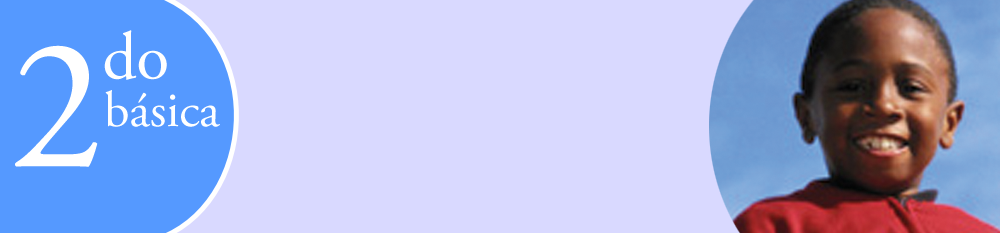
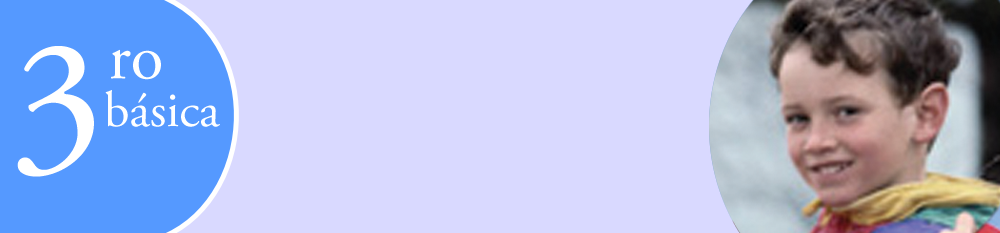
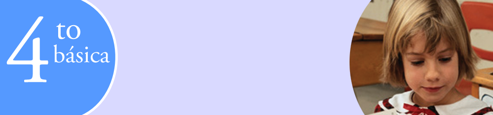

Disfrutar la lectura de imágenes, los relatos contados, el arte y la música. Desarrollo de la autonomía reconocimiento de la identidad, confianza en sí mismo, socialización, respeto, integración, armonía. Aceptación de la diversidad y cuidado del entorno.

Cuentos de hadas, cuentos maravillosos, juegos de lenguaje (adivinanzas, trabalenguas, rondas, entre otros) y narraciones variadas adecuadas con la especificidad literaria. Conversaciones sobre experiencias personales, narraciones, descripciones.

Producir instrucciones, reglas de juego, tarjetas de felicitación, carteles, los procesos y elementos de la lengua y objetivos de comunicación. Cuentos de hadas, juegos de lenguaje (adivinanzas y trabalenguas).

Fábulas, juegos de palabras, adivinanzas, trabalenguas, retahílas, refranes, chistes y cuentos breves diversos, apropiados con la especificidad literaria para conocer, valorar, disfrutar y criticar desde la expresión artística.

Cuentos, rimas y leyendas populares apropiadas con la especificidad literaria para conocer, valorar, disfrutar y criticar desde la básica expresión artística.

Fábulas, juegos de palabras, adivinanzas, trabalenguas, retahílas, refranes, chistes y cuentos breves diversos, apropiados con la especificidad literaria para conocer, valorar, disfrutar y criticar desde la expresión artística.

Leyendas literarias, historietas y poemas de autor apropiados con la especificidad literaria para conocer, valorar, disfrutar y criticar desde la expresión artística. Producir biografías, autobiografías, correo electrónico, chats, mensajes SMS.
Fábulas, juegos de palabras, adivinanzas, trabalenguas, retahílas, refranes, chistes y cuentos breves diversos, apropiados con la especificidad literaria para conocer, valorar, disfrutar y criticar desde la expresión artística.

Novelas de ciencia ficción, romances y diálogos teatrales apropiados con la especificidad literaria para conocer, valorar, disfrutar y criticar desde la expresión artística.
Novelas y cuentos policiales, poesías de amor y subgéneros teatrales apropiados con la especificidad literaria para conocer, valorar, disfrutar y criticar desde la expresión artística.
Analizar los temas (lo mítico en el tiempo, lo trágico y lo cómico, grandes héroes y aventuras y los antihéroes) en textos de distintas épocas y géneros para la comprensión de lss problemáticas recurrentes en la literatura y cómo estos repercuten en su experiencia
vital.

Analizar los temas (lo abundante y lo fugaz, esclavitud y libertad, realidad y evasión, lo individual y lo colectivo) en textos de distintas épocas y géneros para la comprensión de lss problemáticas recurrentes en la literatura y cómo estos repercuten en su experiencia vital.
Comprender las diferentes concepciones del ser humano sobre la realidad, por medio del análisis de textos fantásticos, vanguardistas y manifestaciones literarias de última generación, para reflexionar acerca de la forma de relacionarse con la realidad.